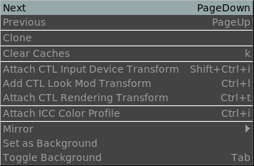

The File Save Menu

The Image menu allows switching to the Next or Previous file in the Reel List or EDL.
The Clone option allows cloning the frame to compare later with something else..
Clear caches clears all file sequence caches to save memory.
The Attach CTL Input Device Transform allows you to load a CTL IDT script and apply it to the current view. The CTL Input Device Transform are usually created by film manufacturers for each camera and sometimes for different settings too. You can have a single CTL IDT script per lut.
The Add CTL Look Mod Transform allows you to apply a look mod transform which is normally used to apply a distinct variation to the image (for example, a bleach pass), without actually modifying the pixels.
The Attach CTL Rendering Transform applies a rendering transform to take the pixels from an ACES workspace to the final OCES workspace. This transform is usually the standard Reference Rendering Transform (RRT.a1.0.0 currently) and requires no change.
The Attach ICC Color Profile allows attaching a color profile to the image. This color profile should end in XYZ color space. It is used if no CTL script is used. The practice of using ICC profiles is now deprecated.
The Mirror Option allows mirroring the image in X or in Y.
The Set as Background image will set the current foreground image as a background image for later compositing or wipe.
Toggle Background allows toggling the compositing of the foreground image over the background image on and off. In order for compositing to work, the foreground image must have an alpha channel.